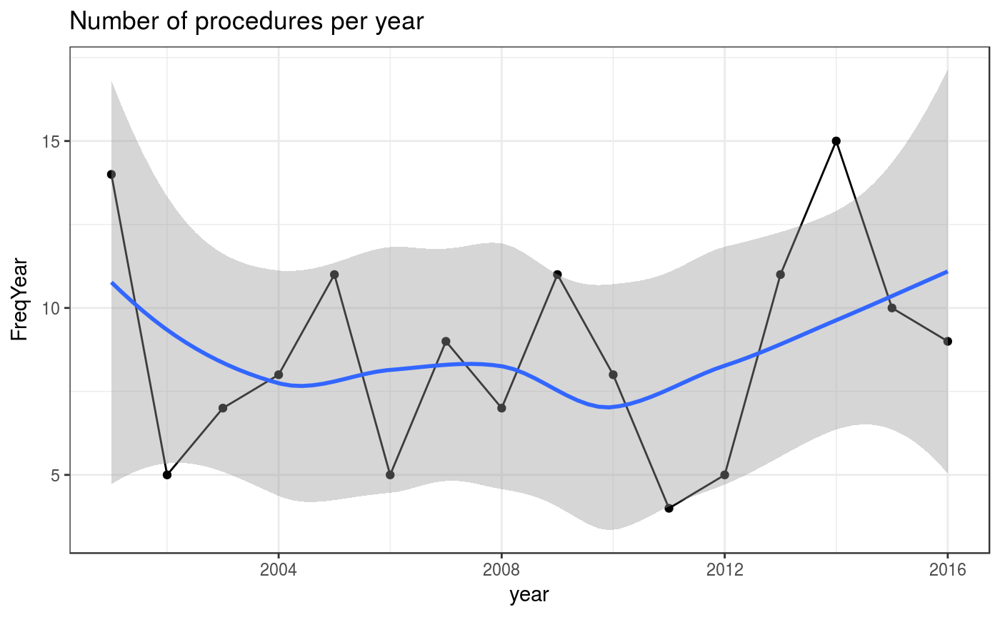
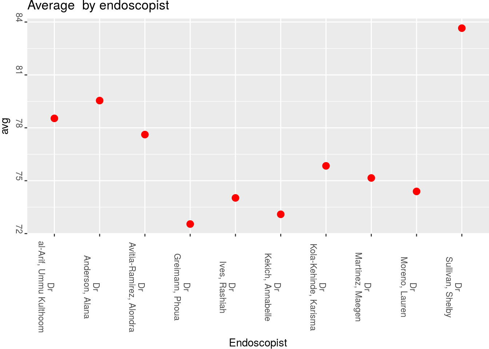

Analysis
Sebastian Zeki
12/22/2017
The Analysis Functions
The analysis functions are split according to the cornerstone questions in day to day gastroenterological practice. These cornerstone questions are expanded upone in the Principles section. In brief they include Surveillance and patient tracking, Endoscopic and Pathology quality and patient flow questions.
Surveillance functions
Surveillance relates to the timing of a test relative to other tests or all tests done for a patient. As such the functions for surveillance extract the date the first test was done, as well as the last test and the difference in timing between each test, always grouped by patient. As all these functions are simply looking at the date of the test they can take a raw dataset, as long as a date column is present and use that, rather than have a lot of pre-processing steps. How the data is organised is explained in the Principles section but essentially the details of this are all hidden in the function.

The basic surveillance functions are simple but are the most often used. SurveillanceTimeByRow will extract the time difference between each individual endoscopy for an individual patient. This is useful to see how adherent the surveillance endoscopy is to guidelines. SurveilLastToNow will show the time difference between now and the last endoscope the patient had. This can be useful to determine if a patient is overdue a further endoscopy. SurveilLastTest simply extracts the last and first test respectively for each patient.
em1<-SurveilTimeByRow(Myendo,'HospitalNumber','Dateofprocedure')
pander(head(data.frame(em1[2],em1[ncol(em1)]),5))| HospitalNumber | diffDate |
|---|---|
| A1648588 | -521 days |
| A1648588 | -170 days |
| A1648588 | -400 days |
| A1648588 | -161 days |
| A1648588 | -510 days |
em2<-SurveilLastToNow(Myendo,'HospitalNumber','Dateofprocedure')
pander(head(data.frame(em2[2],em2[ncol(em2)]),5))| HospitalNumber | diffDate |
|---|---|
| A1648588 | 800 days |
| A1648588 | 800 days |
| A1648588 | 800 days |
| A1648588 | 800 days |
| A1648588 | 800 days |
em3<-SurveilLastTest(Myendo,'HospitalNumber','Dateofprocedure')
pander(head(data.frame(em3[2],em3[5]),5))| HospitalNumber | Dateofprocedure |
|---|---|
| J1337672 | 2013-03-25 |
| Q7176341 | 2014-05-31 |
| M5148114 | 2014-06-18 |
| Q7729897 | 2014-07-19 |
| R3882435 | 2014-11-15 |
em4<-SurveilFirstTest(Myendo,'HospitalNumber','Dateofprocedure')
pander(head(data.frame(em4[2],em4[5]),5))| HospitalNumber | Dateofprocedure |
|---|---|
| F7957976 | 2001-01-03 |
| Y8594667 | 2001-01-04 |
| Z6299612 | 2001-01-08 |
| R8004923 | 2001-01-15 |
| U1759838 | 2001-01-16 |
Of course we also want to know how many tests have been done over a time period and this is provided by two functions
em5<-SurveilCapacity(Myendo,"Dateofprocedure")
pander(head(em5))| month | n |
|---|---|
| 01 | 178 |
| 02 | 158 |
| 03 | 174 |
| 04 | 146 |
| 05 | 184 |
| 06 | 170 |
This function will return the number of tests by month. The more detailed function is:
how<-HowManyTests(Myendo,'Indications','Dateofprocedure','Surv')
how[1]## $Myplot
This will provide the number of tests by month and year as a table as well as a ggplot. It returns a list containing both the ggplot and a dataframe so this can be accessed with how[1] and how[2]
Patient flow functions
Sankey plots
We often like to get an overview of how patients are flowing through a system overall. This can give a nice visual representation of whether which patients diverge from the normal flow through a system so we can study them further. There are two ways to look at this. Sankey plots give good timepoint by timepoint representation of flow. This really works with more than one type of event at each timepoint. For example, if we have a dataset with events such as ‘radiofrequency ablation’ and ‘endoscopic mucosal resection’ or ‘nothing’ we can use the Sankey plot to determine the order of events over a large patient population. You choose the column in the dataframe that describes the Procedure type (“EMR”,“RFA”,“nothing” in this case)
how<-SurveySankey(Myendo,"ProcPerformed")
Circos plots
We may need something even more aggregated. Perhaps we want to see the overall number of patients that go from one event to another regardless of which timepoint it is at. To do this we can use a circos plot, which makes use of the circlize library, as follows:
flow<-PatientFlow_CircosPlots(v,"Dateofprocedure","HospitalNumber","ProcedurePerformed")
Assessment of quality functions
Quality is measured in a variety of different ways. For endoscopy it is measured according to the adherence to a) standards for endoscopic documentation as well as b) detection of certain pathological conditions such as dysplasia (best summarised as lesion recognition)
Documentation Quality
As regards adherence to documentation for example, a generic function is provided that will look up the presence of words presented in a list in a target column. It will then output the proportion of reports that have these words, as well as a barchart to show what proportion of the endoscopies showed these words. The list can be comprised on terms that should be mentioned in a report.
Input
pander(head(data.frame(Myendo[2:3],Myendo[13])))| HospitalNumber | PatientName | Findings |
|---|---|---|
| J6044658 | Jargon, Victoria | No evidence of Barrett’s oesophagus, short 2 cn hiatus hernia ,Oesophageal biopsies taken from three levels as requested ,OGD today to assess for ulceration/ongoing bleeding ,Diaphragmatic pinch:40cm ,She has a small hiatus hernia ,We will re-book for 2 weeks, rebanding ,Tiny erosions at the antrum ,Biopsies taken from top of stricture-metal marking clips in situ ,The varices flattened well with air insufflation ,He is on Barrett’s Screeling List in October 2017 at St Thomas’ HALO 90 done with good effect |
| Y6417773 | Powell, Destiny | Duodenum: Duodenitis with a small erosion ,STOMACH: diffuse gastritis with angiodysplasia and punctate bleeding site on greater curve mid body - no obvious ulcer- antrum scar ?,No immediate complications ,Z-line at: 38cm - Bravo placed at 32cm- good positionat check endoscopy |
| B6072011 | Martinez-Santos, Ana | Stomach- Body Polyp- Pedunculated ,Several erosions/small ulcers in inflammed antrum ,Lax cardia with small hiatus hernia but no erosive oesophagitis ,DUODENUM: Normal to D3 |
| G1449886 | Lopez, Maria | STOMACH: Small amount of bright red blood that seems to have refluxed back through the pylorus |
| V1607560 | al-Rahimi, Rif’a | Coffee ground vomit ,OESOPHAGUS: the previous subepithelial lesion measuring 1 TTS HALO to area |
| I8031481 | Forrest, Dazheea | Stomach- Pylorus ,No cervical inlet patch |
In this example we are looking for the words Barrett’s and coeliac as perhaps we have chosen the macroscopic recognition of these features to denote what an endoscopist should always describe in the endoscope report
myNotableWords <- c("arrett", "oeliac")
tt<-ListLookup(Myendo,'Findings',myNotableWords)
pander(head(tt))| X2 | Prop |
|---|---|
| arrett | 18.45 |
| oeliac | 6.2 |
So we can see that the terms are present in the minority of reports across endoscopists, so perhaps we can look into this further..
Endoscopic Quality
Sedation Usage
Another measure of quality is the assessment of those factors that are recorded at endoscopy such as degree of sedation used etc. Rather than provide a function for each metric, again a generic function is provided that uses any quantifiable metric and plots it against the endoscopist. This function returns a list with two elements- the plot and the table:
Myendo<-EndoscMeds(Myendo,'Medications')
pander(head(data.frame(Myendo$HospitalNumber,Myendo$Fent,Myendo$Midaz),10))| Myendo.HospitalNumber | Myendo.Fent | Myendo.Midaz |
|---|---|---|
| J6044658 | NA | 6 |
| Y6417773 | 125 | 7 |
| B6072011 | 125 | 6 |
| G1449886 | NA | 2 |
| V1607560 | 75 | 6 |
| I8031481 | 150 | 3 |
| W2120051 | 125 | 5 |
| O7163832 | 75 | 3 |
| P6620949 | 25 | 1 |
| L4378217 | 150 | 1 |
MetricByEndoscopist(Myendo,'Endoscopist','Fent')
Pathology Detection Quality
Polyp and sample location
Although not strictly a measure of endoscopic quality, the location of polyps (as well as any sample location) can also be determined. This is particularly for lower GI endoscopy and can help determine whether, for example, the number of right sided polyps is lower than it should be for certain endoscopists.
To do this firstly the free text needs to be standardised. This is provided through the function TermStandardLocation which provides a standard correction for a number of typos and alternative spellings in histology. This also attempts to extract the sample location into a separate column
f<-TermStandardLocation(Mypath,'Histology')
fgg<-data.frame(f[(ncol(f)-1)],f[(ncol(f))])
pander(head(fgg,10))| SampleLocation | AllSampleLocator |
|---|---|
| two biopsies consist of small bowel mucosa and are within normal histological limits | |
| modified giemsa stain ,these are biopsies of Stomach mucosa ,there is no evidence of coeliac disease ,the nuclei are hyperchromatic, ,there is no granulomatous inflammation ,the appearances are in keeping with a reactive/chemical gastritis,features including basal layer hyperplasia and reactive nucelar changes with underlying ,these are two biopsies of squamous epithelium within normal limits,fibromuscularisation of the lamina propria and mild chronic inflammation ,these biopsies of columnar mucosa show focal acute inflammation, moderate chronic inflammation | Stomach |
| the Sigmoid polyp is a tubular adenoma with moderate dysplasia ,inflammation, Stomach metaplasia, dysplasia or neoplasia is seen,patchy fibrosis and myxoid areas and contains numerous eosinophils, as well as scattered ,these biopsies of non-specialised Stomach-type mucosa showed minimal chronic, focally active ,lymphovascular invasion not identified ,into submucosa for less than mm | Sigmoid, Stomach |
| there is mild chronic inflammation ,no intestinal metaplasia, dysplasia or malignancy is seen | |
| no helicobacter-like organisms are seen,no columnar mucosa is included,the biopsies of Oesophagus squamous mucosa show mild chronic inflammation with basal ,nature of specimen as stated on request form = ‘Ascending colon, Descending’,nogiardia organisms or granulomas are ,of moderately differentiated adenocarcinoma,raised intra-epithelial lymphocytes up to per enterocytes | Oesophagus, Ascending, Descending |
| for pt tumours ,two pieces of tissue, the larger measuring mm and the smaller, ,there is a mild increase in intra-epithelial lymphocytes, upto ,the sections show a single biopsy of Oesophagus type squamous epithelium with a ,the biopsies of non-specialised and specialised Stomach mucosa show mild chronic inflammation | Oesophagus, Stomach |
| hyalinised thick collagen bundles with few interspersed spindle cells,clearly seen there appears to be subtotal villous atrophy,within these limitations, the d biopsies show patchy mild ,these biopsies of non-specialised Stomach-type mucosa show a mild chronic, inactivegastritis | Stomach |
| the biopsies from the gastro-Oesophagus junction show squamo-columnar mucosa, some of ,there is no evidence of ,shows elongation of crypts, oedema, mildchronic inflammation and congestion,these biopsies of non-specialised Stomach mucosa show mild chronic inflammation ,submucosa is not included,are no features of eosinophilic oesophagitis ,no acute inflammation is seen ,there are occasional neutrophils ,the appearances are those of Duodenum ulcer | Oesophagus, Stomach, Duodenum |
| contains a moderate neutrophil infiltrate and there are foci of cryptitis,moderate acute and chronic inflammation ,there is no intestinal metaplasia or glandular ,the two biopsies on the strip show squamous epithelium with a dense neutrophil ,two pieces of tissue, the larger measuring mm and the smaller, ,the biopsies of Oesophagus squamous mucosa show minimal chronic inflammation with mild ,unequivocal intramucosal adenocarcinoma and no deeper invasion is seen | Oesophagus |
| the sections show small bowel mucosa with a normal crypt to villous ratio and no increase in ,no parasites are seen,in the Transverse Colon sub-mucosa there ,cell hyperplasia | Transverse, Colon |
Once this is done, a column called SampleLocation is appended to the existing dataset. This will attempt to state the location of all samples whether they are resections/ biopsies or polyps. If polyps specifically need to be located then the PolypLocator function can be used (after the TermStandardLocation function).
fgg<-PolypLocator(fgg,'SampleLocation')
fg<-data.frame(fgg[(ncol(fgg)-2)],fgg[(ncol(fgg)-1)],fgg[(ncol(fgg))])
pander(head(fg,3))| SampleLocation | AllSampleLocator | PolypLocator |
|---|---|---|
| two biopsies consist of small bowel mucosa and are within normal histological limits | ||
| modified giemsa stain ,these are biopsies of Stomach mucosa ,there is no evidence of coeliac disease ,the nuclei are hyperchromatic, ,there is no granulomatous inflammation ,the appearances are in keeping with a reactive/chemical gastritis,features including basal layer hyperplasia and reactive nucelar changes with underlying ,these are two biopsies of squamous epithelium within normal limits,fibromuscularisation of the lamina propria and mild chronic inflammation ,these biopsies of columnar mucosa show focal acute inflammation, moderate chronic inflammation | Stomach | |
| the Sigmoid polyp is a tubular adenoma with moderate dysplasia ,inflammation, Stomach metaplasia, dysplasia or neoplasia is seen,patchy fibrosis and myxoid areas and contains numerous eosinophils, as well as scattered ,these biopsies of non-specialised Stomach-type mucosa showed minimal chronic, focally active ,lymphovascular invasion not identified ,into submucosa for less than mm | Sigmoid, Stomach | Sigmoid |
A further difficult area is the assessment of endoscopic quality by looking at the pathology processed from an endoscopy. This package is excellent at dealing with this kind of question because of its ability to merge the datasets together:
A particularly well developed area to look at is that of the Global Rating Scale for assessing the quality of colonoscopy. One of the metrics- the adenoma detection rate assesses the number of colonoscopies where at least one adenoma was detected.
One function is provided to produce a table that gives the number of adenomas, adenocarcinomas and hyperplastic polyps (also as a ration to adenomas) by endoscopist therefore immediately fulfilling the GRS requirement for the ADR as well as providing further metrics alongside
Adenoma Detection Rates
#Import the endoscopy and pathology datasets for colonoscopy
MypathColon<-PathDataFrameFinalColon
MyendoColon <- ColonFinal
#Rename the columns so that numbers do not lead the column titles
MyendoColon$OGDReportWhole <-gsub("2nd Endoscopist:","Second endoscopist:",
MyendoColon$OGDReportWhole)
#Extract the columns needed from endoscopy
EndoscTree <-c("Hospital Number:","Patient Name:","General Practitioner:",
"Date of procedure:","Endoscopist:","Second endoscopist:","Medications",
"Instrument","Extent of Exam:","Indications:","Procedure Performed:",
"Findings:","Endoscopic Diagnosis:")
MyendoColon<-Extractor(MyendoColon,"OGDReportWhole",EndoscTree)
#Extract the columns needed from Histology
Histoltree <-c(
"Hospital Number:","Patient Name:","DOB:","General Practitioner:",
"Date received:","Clinical Details","Nature of specimen","Macroscopic description:","Histology",
"Diagnosis")
#Tidy up to allow merge
MypathColon <-Extractor(MypathColon,"PathReportWhole",Histoltree)
names(MypathColon)[names(MypathColon) == 'Datereceived'] <- 'Dateofprocedure'
MypathColon$Dateofprocedure <- as.Date(MypathColon$Dateofprocedure)
#Do the merge
vColon <-Endomerge2(MypathColon, "Dateofprocedure","HospitalNumber",
MyendoColon, "Dateofprocedure","HospitalNumber")
#Use the function
GRSTable<-GRS_Type_Assess_By_Unit(vColon,'ProcedurePerformed','Endoscopist','Diagnosis','Histology')
pander(GRSTable)| Endoscopist | NumAdenomas | NumColons.x | PropAdenomas |
|---|---|---|---|
| Dr al-Huda, Ummu Kulthoom | 3 | 204 | 1.471 |
| Dr al-Saade, Waajida | 2 | 215 | 0.9302 |
| Dr Confer, Mouneek | 6 | 216 | 2.778 |
| Dr Gebregzabheir, Kiara | 4 | 190 | 2.105 |
| Dr Hasling, Emily | 6 | 218 | 2.752 |
| Dr Monroe, Danjai | 7 | 230 | 3.043 |
| Dr Phillips, Harlie | 6 | 233 | 2.575 |
| Dr Rahat, Janisa | 1 | 217 | 0.4608 |
| Dr Rubio, Jessica | 2 | 180 | 1.111 |
| Dr Steinbach, Lindsey | 6 | 191 | 3.141 |
| NumHyperplastics | Colons(Count) | PropHyperplastic | NumAdenocarcinomas |
|---|---|---|---|
| 2 | 204 | 0.9804 | NA |
| NA | 215 | NA | NA |
| 3 | 216 | 1.389 | NA |
| 3 | 190 | 1.579 | NA |
| 5 | 218 | 2.294 | NA |
| 2 | 230 | 0.8696 | NA |
| 3 | 233 | 1.288 | NA |
| 2 | 217 | 0.9217 | NA |
| 2 | 180 | 1.111 | NA |
| 3 | 191 | 1.571 | NA |
| NumColons | PropAdenocarcinomas | HyperplasticToAdenomaRatio |
|---|---|---|
| 204 | NA | 1.5 |
| 215 | NA | NA |
| 216 | NA | 2 |
| 190 | NA | 1.333 |
| 218 | NA | 1.2 |
| 230 | NA | 3.5 |
| 233 | NA | 2 |
| 217 | NA | 0.5 |
| 180 | NA | 1 |
| 191 | NA | 2 |